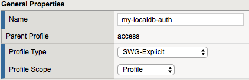
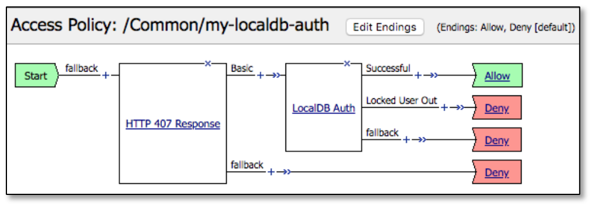

Community Training Classes & Labs > F5 SSL Orchestrator Index
2.2.3. LAB 3 – CREATE AN EXPLICIT FORWARD PROXY SSLO¶
SSL Orchestrator creates discreet, non-overlapping interception rules (listeners) based on the selected topology. For example, the explicit forward proxy workflow minimally creates an explicit proxy listener and relying transparent proxy listener attached to the explicit proxy tunnel. If a separate transparent proxy workflow was created, the resulting listener would not conflict with or overlap the existing transparent proxy listener. Therefore, assuming a transparent forward proxy already exists from Lab 1, the following workflow will create a separate set of non-overlapping listeners to satisfy an explicit forward proxy use case.
2.2.3.1. Step 1: Review the lab diagram and map out the services and endpoints¶
Review the same step in Lab 1 for more details. This lab uses the exact same environment, so SSL settings, services, service chains and security policy will be re-used.
2.2.3.2. Step 2: Configure an explicit proxy SSLO deployment through Guided Configuration¶
- Configuration review and prerequisites – take a moment to review the topology options and workflow configuration, then click Next.
- Click on Topologies then click Add
{kind=link}
- Click NEXT

- Topology Properties
- Name: provide some name (ex. “sslo_explicit”)
- Protocol: TCP
- IP Family: IPv4
- Topology: select L3 Explicit Proxy
- Click Save & Next
- SSL Configurations – the existing outbound SSL settings from Lab
1 can be re-used here.
- SSL Profile: Use Existing, select existing outbound SSL settings.
- Click Save & Next
- Services List – there are no new services to create.
- Click Save & Next
- Service Chain List – there are no new service chains to create.
- Click Save & Next
- Security Policy – the existing outbound Security Policy from Lab 1 can be re-used here.
- Type: Use Existing, select existing outbound SSL settings.
- Click Save & Next
- Interception Rule – an explicit proxy requires a unique IP
address and port listener.
- IPV4 Address: 10.20.0.150
- Port: 3128
- Access Profile: if enabling explicit proxy authentication, select an existing SWG-Explicit access profile here.
- VLANs: client-net
- Click Save & Next
- Egress Setting – traffic egress settings are now defined per-topology and manage both the gateway route and outbound SNAT settings.
- Manage SNAT Settings – enables per-topology instance SNAT settings. For this lab, select Auto Map.
- Gateways – enables per-topology instance gateway routing. Options are to use the system default route, to use an existing gateway pool, or to create a new gateway. For this lab, select Use Existing Gateway Pool, then select the “-ex-pool-4” gateway pool.
- Click Save & Next
- Summary – the summary page presents an expandable list of all of
the workflow-configured objects. To expand the details for any given
setting, click the corresponding arrow icon on the far right. To edit
any given setting, click the corresponding pencil icon. Clicking the
pencil icon will send the workflow back to the selected settings
page.
- When satisfied with the defined settings, click Deploy.
- Testing – configure the browser to use 10.20.0.150:3128 for explicit proxy access. An explicit proxy request test can also be done using command-line cURL:
2.2.3.3. Step 3: Add DNS and Logging settings¶
Minimally an explicit proxy requires DNS settings. To enable this for the L3 Explicit topology, in the SSLO UI click System Settings.
- DNS Query Resolution – select Local Forwarding Nameserver.
- Local Forwarding Nameserver(s) – enter 10.30.0.1.
- [Optional] Logging Level – select the logging level most appropriate for the deployment. Keep in mind, however, that DEBUG logging produces an enormous amount of local Syslog traffic and is not recommended when processing production traffic flows.
- Click Deploy to commit the changes.
2.2.3.4. Step 4: [Optional] Add explicit proxy authentication¶
Enabling explicit proxy authentication in SSLO requires two steps,
Create an SWG-Explicit access policy – explicit proxy authentication is defined as an access policy of type SWG-Explicit.
This policy will typically contain an HTTP 407 Response challenge, and then some form of authentication, which could HTTP Basic, NTLM or Kerberos.
Create or edit an Explicit Proxy SSLO topology and attach the SWG-Explicit access policy – to attach the SWG-Explicit access policy to SSLO, create or edit an Explicit proxy SSLO topology. On the Interception Rules page, select this policy under the Access Profile option.
{kind=link}
{kind=link}